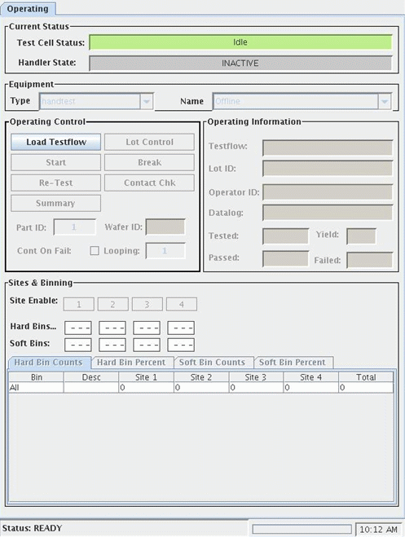
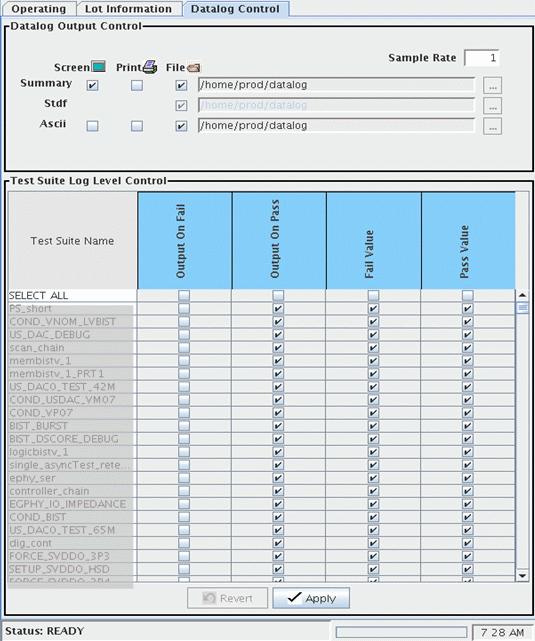
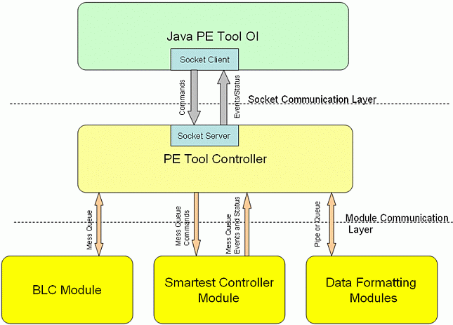
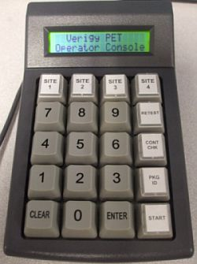

Developing an Advanced Production Interface for V93000
Joel Taylor, Verigy
Xiaofei Han, Verigy
Paper-ID: 12460 April 2010
Abstract
This paper will present some examples of how new interfaces available with Smartest can be used to create an advanced operation control panel used by a major IDM. A C-based execution control program was also used to overcome many of the previous limitations of the legacy application model.
The V93000 Smartest operation environment can be a challenge for production engineers. The basic operation panel often does not provide a sufficient amount of control, yet the SmarTest Work Center provides a complex environment that can be difficult to navigate. The Production Engineering Tool was developed to bridge this usage gap and provide flexible control of the execution and data logging environment while limiting the complexity and number of screens required accessing this control. This paper will discuss the new API's available with SmarTest and how software modules incorporating these were used to create a powerful and flexible user environment. The techniques used by this project could be used to develop a wide variety of external interfaces into the front end of Smartest, as well as specific control to the test execution
Key Words: Operator interface, production, SmarTest, Production
Introduction
SmarTest provides a rich development environment which allows engineers to easily manage the execution and debug of test flow. The SmarTest Work Center is a complex environment which is not suited to production execution. The goal of this paper is to present a powerful production environment which provides much of the control capabilities of the EWC, with a much easier to use interface which can be used in high volume production.
Limitations of current production environment
The SmarTest integrated production environment is a very simple execution tool which only provides for work orders which have been predefined to be run. These workorders define the entire testing environment, including data collection, choice of material handling (prober, handler), and any setup conditions for executing the testflow. If the production staff requires an alternate setup, a new workorder must be created.
Another limitation is that changing the material handling requires re-loading the testflow, which can be a lengthy process.
No way to easily change data output options. Often engineers want to create ascii output files, printouts, or other formats easily without creating new workorders or testprograms.
Although production execution can usually work within these limitations, when engineering is using the tool these issues can impact productivity.
Objective
The goal for developing this interface tool was to provide a production environment which allows flexibility, efficiency, and ease of use.
- A single interface tool, no need for the operator or engineer to use the SmarTest Work Center or production operation panel from SmarTest. For engineering use, we were focusing on test execution, not debug and development. For this purpose, it was assumed that the SmarTest Work Center would still be the required interface.
- Allow equipment type to be changed between lots without reloading testflow.
- Current testflows and prober/handler libraries would be compatible with the tool, no need to modify current device files.
- Configurable to support additional data formatters, allowing the user to easily enable or disable these functions
Operator Interface

Figure 1: PE Tool operator interface - Operating panel
The PE Tool provides an interface to select the testflow, select the material handling equipment type and specific model. There is a one touch execution of the testflow as a contact check in which there is no data logged to the summary counters, but the test results are displayed. If handtest is selected, the available sites can be enabled or disabled from the operator interface.
Lot control is used to begin a test execution session and enter any required values to be used in the data set.
Partial summary files can be generated anytime once a lot has started. The summary results are updated as testing progresses, and are cleared when a new lot begins.
For real time data display, the interface displays each site values as the testflow completes, and a running count of hardware bins, soft pins both as percentage and count is displayed for each bin value specified.

Figure 2: PETool operator interface - Datalog control panel
The datalog control panel allows datalog control flags to be set or cleared for each test suite. Also output file control is provided on this panel, to select various output files and destinations. For each output file format, the default file name can also be overwritten by the user.
Development Environment - Software languages used
C++ was used to develop the core modules which provide communication into Smartest as well as execution control.
The operator interface was developed in Java with a clean command and event driven interface. This allows the OI to be enhanced or even replaced with a customers OI provided the socket communication and command set is maintained.
Toolsets used
The production environment tool was developed using the recent set of SmarTest control API's, known as the High Volume Manufacturing API library. This allows external applications to control SmarTest as well as keep in sync with execution timing by using event notification and commands.
Additionally the new BLC library and architecture was used to develop a flow control similar to the application model, but with the ability to change shared memory structure and switch between handtest, handler, or prober control models while using a single testflow load. This design and the API library greatly simplified meeting the customers use model.
BLC input file and PET configuration file
The BLC or C++ based application model alternative depends on using an input file to provide a wide range of configuration, default values, and execution control information. The design of the production tool required the use of multiple setup files which are combined at run time to create the temporary, one time use, input file.
The baseline input file contained values which were constant for a site and a tester and are not lot dependent. Items such as facility name, location, system identifier are maintained in the baseline file. There is a single baseline file for each system.
At run time a combined file is created for the test session. This contains information on the device directory, the prober or handler directory, user id, and software revision information.
Software modules and their functions
The PET consisted of three major components; the operator interface, the pe tool controller, and the SmarTest control module.
The operator interface was developed in Java and provides a multi panel input device, with the major controls accessible via the top level panel. Other panels provide control of data logging and testflow flags.
The pe tool controller was used to provide the key communication between the BLC executable, the data formatters, and the operator interface module.
The SmarTest control module was used to start and stop smartest as well as call HVM API's to change devices and provide high level control of the test session.

Figure 3: Software module structure if PE Tool
PE Tool Functionality
The key functionality of this interface tool was to provide a more powerful user interface while avoiding the complex engineering debug environment. Another function that has made this interface successful is the ability to use a single testflow in a variety of configurations such as handtest, handler, or prober, without needing a separate test program for each configuration. This allows for better easier maintenance of the device directory, as well as speeds up operations when switching from handtest to handler, since the testflow does not need to be reloaded.
Data monitoring, partial summary, and datalog control are provided as well, these allow engineers flexibility to create custom file names for engineering lots.
Additional capability - low cost hand held console
One of the requests for this production interface was to provide a handheld console that would allow the engineer to control test execution while hand-testing parts at the test head. Numeric keypads had been used in the past and interfaced to other operator control panels, however there had been very limited capability. Alternatives were being developed using expensive PDA's which were not as rugged and had the risk of being lost or stolen.
A low cost solution was found available commercially which met the requirements and provided flexibility of operation. The Genovation Mini-Terminal is a USB device with a 16x2 LCD display and 20 key programmable keypad. This provided functionality for the following operations:
- Start testflow execution
- retest device
- enable or disable a site for testing (supports up to 4 site testing)
- Display sites enabled or disabled
- enter part id for initial site. subsequent part IDs are incremented from that value
- Display test results (Pass/Fail and hardware bin ID)

Figure 4: Genovation Miniterm Pro 900
Limitations for this tool
Currently the PE Tool does not synchronize with the SmarTest Work Center development and debug environment. The design goal was to provide a basic control capability to the operator interface of the PET and not use the PET in conjunction with the SmarTest Work Center since the use model was different. While the PE Tool works well in engineering mode, if a user changes a testflow flag using the EWC, that change will not be apparent on the PETool interface.
The PE Tool maintains an internal state model while a lot test session is active. Due to this feature, all test execution must be done via the PE Tool interface, and not the SmarTest Work Center interface (commonaly referred to as the 'running man').
EWC control is allowed outside the lot start and lot complete events, however data logging is not enabled outside the lot. This would allow test execution for debug, but not data logging.
Conclusion
The Verigy Production Environment Tool provides a powerful tool that allows both the engineer and operator to effecently control SmarTest. By using the new API libaries developed for SmarTest, many of the legacy limitations were overcome. This tool is designed to be expandable and allow customers to create the best interface and usage of Smartest possible. This project is being used as a baseline for a future development kit designed to allow customers to create powerful applications to meet their interfacing needs.